Engasgo
O engasgo é uma manifestação do organismo para expelir um corpo estranho (alimento ou objeto) que toma um "caminho errado", durante a deglutição (ato de engolir).
É considerado uma emergência, e em casos graves, pode levar a pessoa à morte por asfixia ou deixá-la inconsciente por tempo. Sendo assim, agir rapidamente evita complicações.
Casos de engasgamento de bebês no estado da Paraíba
No Brasil, segundo dados da ONG Criança Segura (2020), morrem cerca de 700 crianças (inclusos aqui os bebês) por ano por sufocamento ou engasgo, por isso é importante saber como agir nesses casos.
Na Paraíba, notícias relacionadas a engasgamento de bebês tem se tornado cada vez mais recorrente. Algumas dessas notícias podem ser consultadas através os links abaixo:
O engasgo é uma manifestação do organismo para expelir um corpo estranho (alimento ou objeto) que toma um "caminho errado", durante a deglutição (ato de engolir).
É considerado uma emergência, e em casos graves, pode levar a pessoa à morte por asfixia ou deixá-la inconsciente por tempo. Sendo assim, agir rapidamente evita complicações.
Casos de engasgamento de bebês no estado da Paraíba
No Brasil, segundo dados da ONG Criança Segura (2020), morrem cerca de 700 crianças (inclusos aqui os bebês) por ano por sufocamento ou engasgo, por isso é importante saber como agir nesses casos.
Na Paraíba, notícias relacionadas a engasgamento de bebês tem se tornado cada vez mais recorrente. Algumas dessas notícias podem ser consultadas através os links abaixo:
Causas de Obstrução das Vias Aéreas por Corpo Estranho (OVACE) em bebês
As principais causas de obstrução das vias aéreas em bebês (menor que 1 ano de idade) ocorre pela ingestão de líquidos (ex. ingestão de leite materno durante a amamentação) ou alimentos pastosos e, em alguns poucos casos, com objetos mais rígidos que foram encontrados no chão.
Tipos de OVACE e como reconhecê-las? Pediatras costumam classificar as OVACE de duas formas: parcial ou total. Em geral, reconhece-se uma OVACE parcial através dos seguintes sinais:
As principais causas de obstrução das vias aéreas em bebês (menor que 1 ano de idade) ocorre pela ingestão de líquidos (ex. ingestão de leite materno durante a amamentação) ou alimentos pastosos e, em alguns poucos casos, com objetos mais rígidos que foram encontrados no chão.
Tipos de OVACE e como reconhecê-las? Pediatras costumam classificar as OVACE de duas formas: parcial ou total. Em geral, reconhece-se uma OVACE parcial através dos seguintes sinais:
- Respiração acelerada e ofegante
- Sinais incomuns de agitação
- Tosse muito frequente
- Choro incessante
- Incapacidade do bebê tossir ou chorar
- Lábios e carinha cianótico (arroxeados) que indica a falta de ar
- Moleza no corpinho (devido à dificuldade de respirar)
Tipos de Manobras de desengasgo de bebês
Independente dos tipos de OVACE, a conduta indicada é a desobstrução das vias aéreas de forma imediata. Para isto, existem manobras específicas que podem ser empregadas para desengasgo de bebês quer estejam Inconscientes ou Conscientes.
Independente dos tipos de OVACE, a conduta indicada é a desobstrução das vias aéreas de forma imediata. Para isto, existem manobras específicas que podem ser empregadas para desengasgo de bebês quer estejam Inconscientes ou Conscientes.
Engasgo Parcial
O que vejo e percebo quando o bebê tem um engasgo parcial?
Telefones de Emergência:
O que vejo e percebo quando o bebê tem um engasgo parcial?
- Ele está ofegante e respirando rápido;
- O bebê está agitado;
- O bebê está tossindo;
- O bebê está chorando;
Saiba +
O que eu devo fazer?
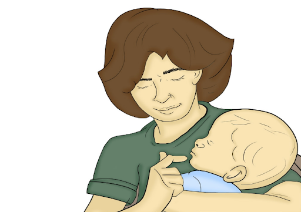
- Mantenha a calma!
- Segure o seu bebê no seu colo em posição confortável virado para você
- Não “sacudir” o bebê;
- Deixe o seu bebê chorar, pois significa que ele está respirando!
- Nunca tente usar os dedos para retirar o objeto da garganta do bebê, pois você poderá empurrá-lo ainda mais fundo, piorando a situação!
Telefones de Emergência:
- Corpo de Bombeiros..... Telefone: 193.
- SAMU.............................Telefone: 192.
Engasgo Total
O que vejo e percebo quando o bebê tem um engasgo total?
PASSO 3
PASSO 4
PASSO 5
PASSO 6
Inicie as manobras a abaixo:
Observações:
O que vejo e percebo quando o bebê tem um engasgo total?
- O bebê não consegue tossir ou chorar;
- Os lábios do bebê estão arroxeados;
- Sem ar, o bebê pode ficar “molinho”.
- Mantenha a calma!
- Ligue ou peça para alguém ligar imediatamente para o Corpo de Bombeiros telefone 193 ou SAMU telefone 192 e diga seu endereço: nome da rua, número da casa, nome do bairro e a cidade onde está.
- Não tente retirar o objeto da garganta do bebê, pois você poderá empurrá-lo ainda mais fundo, piorando a situação!
- Com o dedo indicador e médio deve segurar a boca do bebê aberta;
- Coloque o bebê deitado de barriga para baixo em cima do seu antebraço, com a cabeça mais baixa que o corpo;
- Apoie seu antebraço na sua coxa para ter mais firmeza.
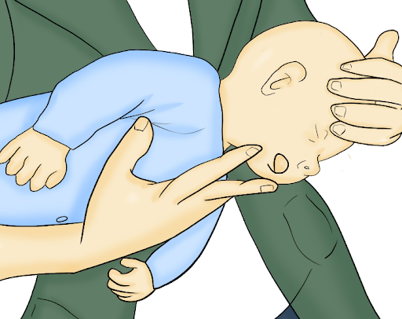
PASSO 3
- Dê 5 tapas com a base da mão entre os ombros, no meio das costas do bebê;
- Com um pouco de força, mas sem machucá-lo!
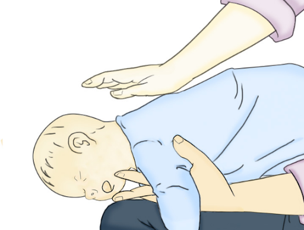 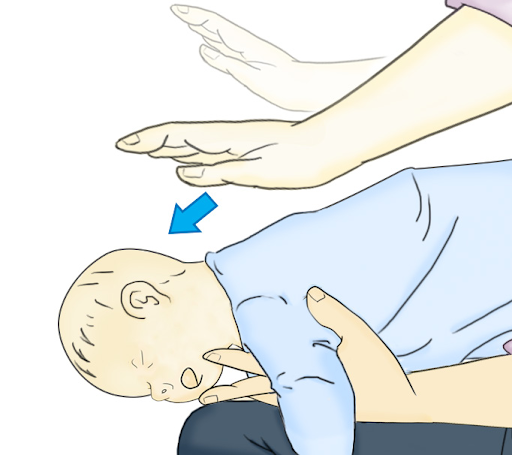
PASSO 4
- Coloque o bebê deitado de costas sobre o outro antebraço apoiado sobre a coxa;
- Faça 5 compressões com dois dedos do meio do peito, entre os mamilos;
- É bom você saber que cada compreesão deve ter 4 centímetros 2 a 3 dedos de profundidade
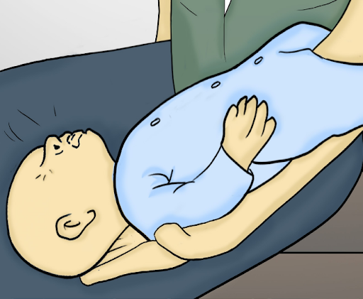 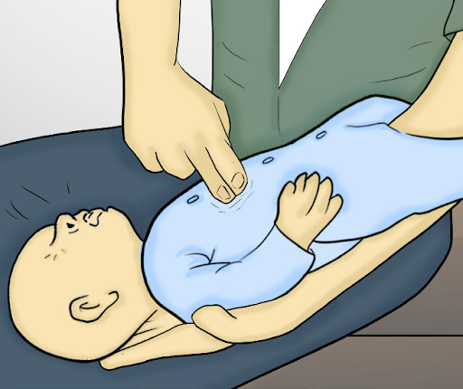
PASSO 5
- Olhe para o bebê;
- Se ele chorar, vomitar ou tossir é sinal que desengasgou. Sua cor voltará ao normal.
- Se o bebê continuar engasgado e consciente tentando respirar;
REPITA OS PASSOS 2, 3 e 4! - Se o bebê ficar inconsciente ou sem reação:
Vá para o passo 6.
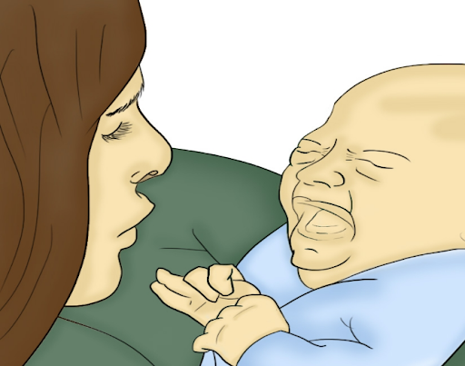
PASSO 6
- Se o bebê continuar "molinho", sem nenhuma reação, ele pode estar inconsciente, faça as manobras a seguir (bebê inconsciente). Como saber quando o bebê ficou inconsciente?
- O bebê não responde aos chamados: não chora, não se mexe, não tem reações!
- Ele não responde quando você mexe nele!
- Ele fica com respiração agonizante: ele não consegue respirar direito.
- O bebê faz esforço para respirar, mas não consegue. Pode estar desmaiado.
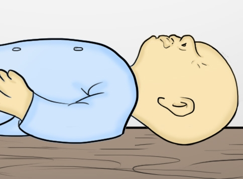
Inicie as manobras a abaixo:
- Coloque o bebê deitado de costa em uma superfície firme (na mesa ou no chão);
- Comprima o osso esterno (entre os mamilos no meio do peito) com dois dedos a uma profundidade 4 cm (mais ou menos 2 a 3 dedos);
- Faça 30 compressões fortes e rápidas;
- Não se esqueça! A cada compressão deixe o peito do bebê retornar à posição inicial;
- Quando fizer 30 compressões abra a boca do bebê e faça 2 ventilações;
- Encha suas bochechas de cor e sopre na boca e nariz do seu bebê;
- Para abrir a boca do bebê, coloque uma mão sobre a testa e com o dedo indicador e polegar da outra mão, puxe o queixo do bebê para trás e para cima ao mesmo tempo, conforme a figura ao lado;
- Sopre ar até perceber o tórax do bebê levantar:
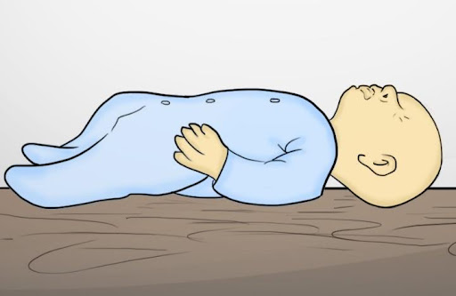 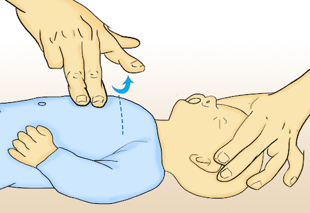
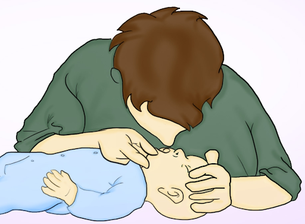
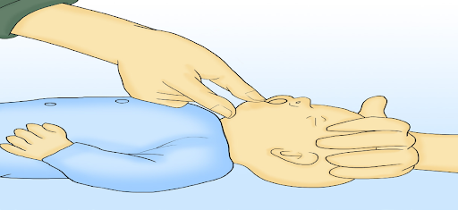
Observações:
- A cada 01 minuto você tem que fazer no mínimo 100 e no máximo 120 compressões (como se fosse o coração do bebê batendo);
- Após cada compreesão que você fizer no peito do bebê deixe-o voltar a posição inicial, para que o coração possa se encher de sangue;
- Somente coloque sua boca na boca/nariz do bebê que seja da sua família;
- Oriente-se que se o bebê não for seu familiar faça somente as compressões até a chegada da equipe de resgate. Isso evita que você contamine com alguma doença que o bebê tenha:
- Se alguém estiver com você, vocês poderão trabalhar juntas! Uma pessoa faz 15 compressões e outra 2 ventilações (soprar ar na boca do bebê).